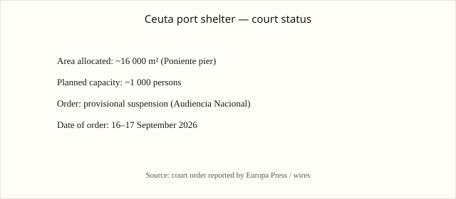

Ceuta · migración · 16–17 septiembre 2026
La Audiencia Nacional ordena la suspensión provisional de las obras y la apertura de un dispositivo de acogida en el puerto de Ceuta.

images/ceuta-hero.svg.
Lo que coincide entre las redacciones
La Sección Octava de lo Contencioso-Administrativo de la Audiencia Nacional dictó una providencia que ordena al Ministerio de Transportes no ejecutar la decisión de destinar aproximadamente 16.000 metros cuadrados de la ampliación de Poniente del Puerto de Ceuta a un dispositivo temporal de acogida de personas migrantes, con capacidad prevista de alrededor de un millar de personas. La orden es de suspensión provisional y requiere que el ministerio aporte con urgencia el expediente administrativo completo. El recurso lo interpuso el Sindicato Unificado de Policía, que alegó falta de garantías de seguridad suficientes. Varias agencias coinciden en la existencia de la providencia, la superficie y la capacidad aproximada.
El contexto es la crisis migratoria iniciada con los cruces masivos de finales de julio de 2026 desde Marruecos hacia Ceuta.
Lo que es solo una cita o una alegación
La calificación de “invasión” o de “abandono” son marcos políticos. Las cifras de migrantes que permanecen en la ciudad siguen sin un padrón independiente público actualizado. La tesis del recurso sobre seguridad es eso: una alegación pendiente de examen de fondo.
Mecanismo que el lector necesita
El puerto es un bien de dominio público. La cesión de una parcela requiere un acto administrativo motivado. La Audiencia Nacional puede adoptar medidas cautelares cuando aprecia apariencia de buen derecho y riesgo de daño de difícil reparación, sin prejuzgar el fondo. La crisis de Ceuta de 2026 se distingue por el volumen de entradas y por la permanencia de un número significativo de personas en una ciudad de unos 84.000 residentes.
Lo que esta historia no es
No es una sentencia firme que prohíba de forma definitiva cualquier dispositivo en el puerto. No es un recuento actualizado del número de migrantes. La imagen superior es una vista de la valla fronteriza, de tipo y localización.

Artículos fuente y puntuaciones
| Medio | Titular | T | N | C |
|---|---|---|---|---|
| Europa Press / LNE | La Audiencia Nacional frena la instalación de carpas para migrantes en el Puerto de Ceuta | 94 | 0 | 98 |
| Yabiladi | Spain court suspends Ceuta migrant camp over safety concerns | 93 | 0 | 100 |
| Breitbart | Spanish Court Halts Govt. Plans for Migrant Shelter near Ceuta Port | 88 | +25 | 85 |
| laSexta | Última hora crisis Ceuta — Audiencia Nacional paraliza campamento en el puerto | 90 | -5 | 92 |
Imágenes: Wikimedia Commons (valla de Ceuta) vía Special:FilePath; gráfico original local. Sin crossorigin. onerror a SVG locales.